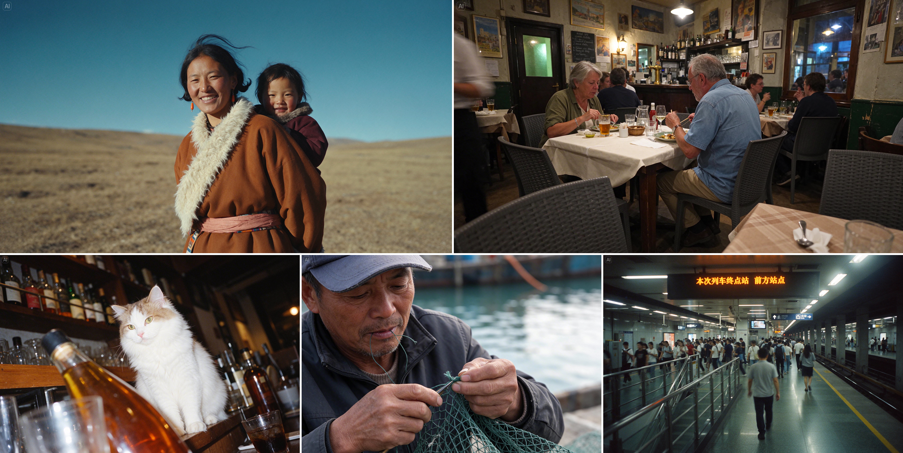
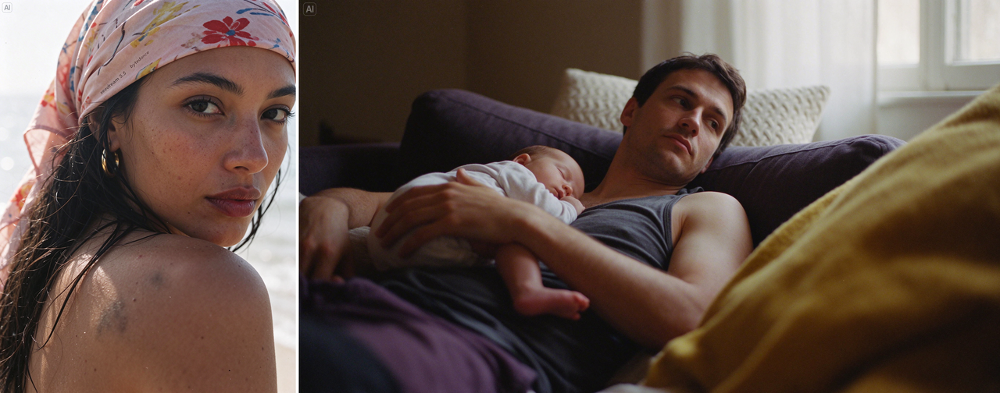
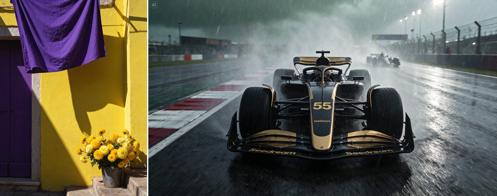
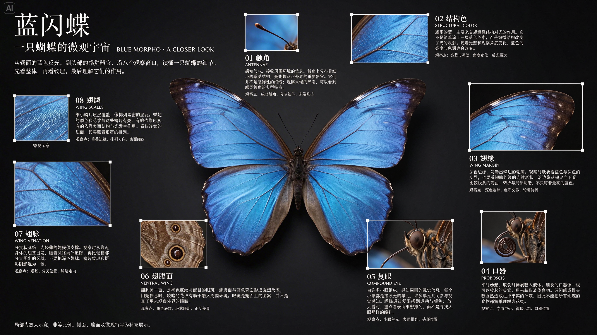
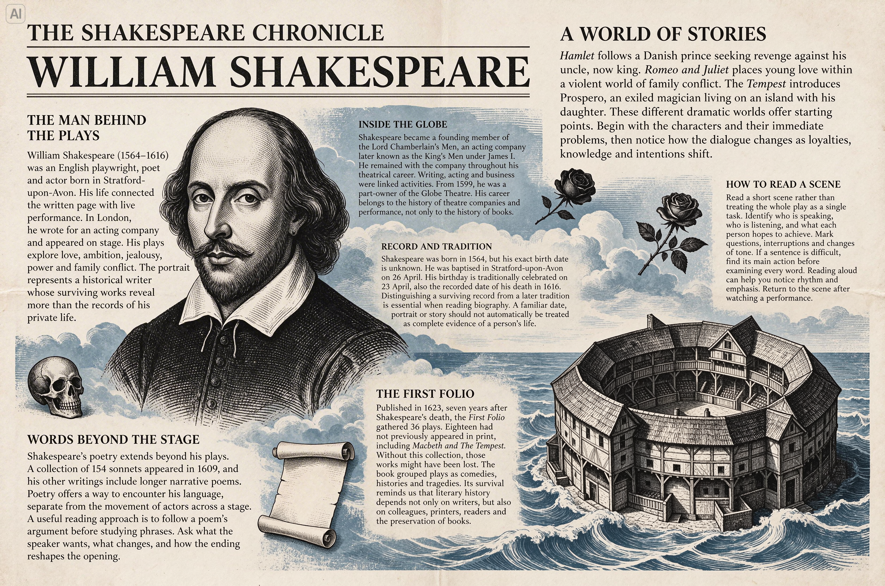
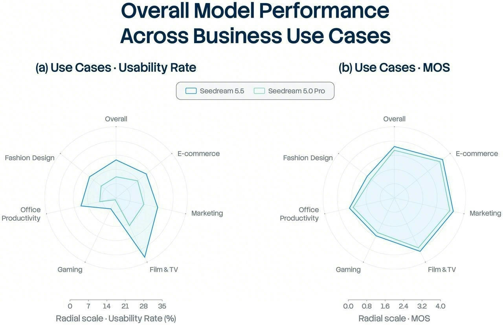
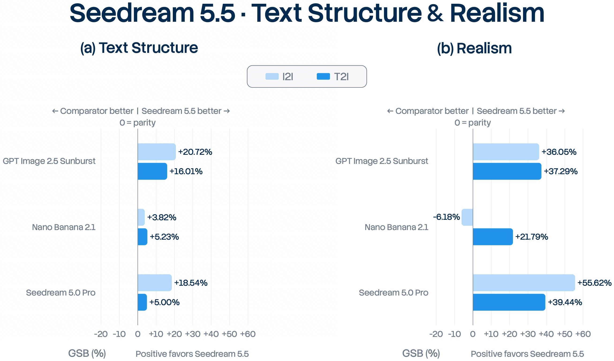
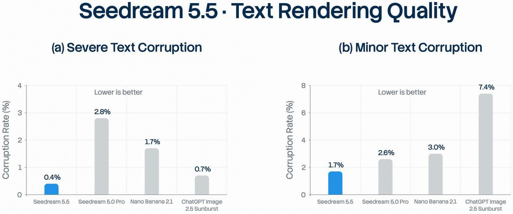

Seedream 5.5 官方发布博客原文摘录
来源：https://seed.bytedance.com/zh/blog/more-realistic-images-more-stable-editing-across-100-rounds-introducing-seedream-5-5
官方日期：2026-11-09。以下为原文文字提取，原始HTML另存，不是研究笔记。
生成更真实，百轮编辑更稳定｜Seedream 5.5 发布 生成更真实，百轮编辑更稳定｜Seedream 5.5 发布 日期 2026-11-09 分类 视觉智能 今天，我们正式发布新一代图像创作模型 Seedream 5.5。 图像创作模型正在融入专业视觉生产流程。关键在于，模型能否在交付标准、时间和成本的约束下，持续产出可用的结果。 我们认为，视觉智能的进步，要同时提高创作上限与专业制作的可靠性。这要求模型兼顾画面的表现力、内容的准确性与编辑的可控性。有了这样的确定性，创作团队才敢放开手脚，把想法打磨到极致。 围绕这些实际诉求，Seedream 5.5 重点带来三项核心能力升级： 更稳定的多轮编辑： 实现非编辑区域的像素级保持，消除色彩偏移，降低连续修改中的细节丢失与画质衰减，支持围绕同一作品展开多达 100 轮的持续创作。 原生 RGBA 透明素材生成： 直接输出带 Alpha 通道的透明或半透明图像，精细处理轮廓边缘与透明区域，省去后期抠图修边，让生成元素可以作为独立素材进入后续设计流程。 质感更自然，文字更清晰： 进一步改善光照、材质与皮肤纹理表现，减少过度油亮、过曝，更贴近真实拍摄的成像质感。同时显著提升文字渲染能力，对复杂字形与密集小字的还原更加准确。 评测结果显示，Seedream 5.5 整体表现较前代显著提升；对比其他主流模型，在文字结构、文生图真实感方面效果领先。 目前，Seedream 5.5 正陆续在即梦、豆包、豆包工作、火山方舟等平台上线，欢迎体验。 项目主页： https://seed.bytedance.com/seedream5_5 体验入口： 1）即梦网页版-创作-生成/画布-选择Seedream 5.5； 2）豆包App/网页版-图像生成-选择模型Seedream 5.5； 3）豆包工作-技能-Seedream5.5； 4）火山方舟体验中心-视觉模型-图片生成-Doubao-Seedream-5.5。 多轮编辑，像素级保持，让复杂创意稳定落地 在真实、复杂的创作场景中，每一轮生成的画面，都可能成为新灵感的起点。一次尝试带来新的想法，再通过下一轮修改落实到画面中，方案由此不断完善。 这要求模型在完成新修改的同时，稳定保留无需调整的内容。当上一轮输出成为下一轮输入，细微偏差可能随编辑次数增加而不断累积，造成细节丢失与画质退化。为此，Seedream 5.5 通过专项训练，实现了非编辑区域的像素级保持，支持创作团队在持续推敲中深入打磨画面。 如视频所示，围绕同一人物，我们进行了 100 轮连续编辑，每一轮都以前一轮的结果为基础。经过服装、配饰与桌面物件的多轮变化后，模型仍能精细修改戒指、镜框等细小对象，并根据人物当前姿态，处理好配饰与皮肤的接触、遮挡和光影衔接。 您的浏览器不支持视频播放。 接下来，我们通过四组花卉创作，展示模型在多对象、多材质场景下的多轮编辑能力，涵盖写实花卉、静物组合、手账拼贴与国画。花枝与装饰经过多轮增添、替换后，Seedream 5.5 仍能调整指定花朵的形态或材质，在呈现蕾丝镂空、珠饰光泽与枝叶纹理的同时，处理好对象之间的遮挡关系。 您的浏览器不支持视频播放。 此外，在室内场景的连续改造中，家具与陈设会不断变化。模型能否依据每一轮的布局准确处理空间关系，是多轮编辑的另一重考验。 在这组创作中，旧书房逐渐被改造成色彩丰富、充满想象力的空间。随着同一个箱子不断换位，模型相应调整透视、遮挡与投影，并合理呈现原先被遮挡的部分。房间越改越不一样，但每一轮的透视和遮挡都对得上。 您的浏览器不支持视频播放。 原生 RGBA 透明素材，免去抠图，灵活编排 让生成内容成为可独立编排、跨场景复用的素材，是图像模型深入专业生产流程的重要一步。 Seedream 5.5 新增原生 RGBA 透明素材生成能力，直接输出带 Alpha 通道的透明或半透明图像。在保留主体丰富形态与质感的同时，准确处理轮廓边缘与透明区域，让生成内容能够独立用于排版、合成与制作。 创作者可以通过文字描述或参考图，生成所需的透明素材。如视频所示，雪鸮展开双翼，层叠的羽毛纹理清晰可见。模型可细致处理翅尖的羽毛、羽间微小空隙与爪部轮廓，保留复杂结构，省去后续抠图与边缘修整。 您的浏览器不支持视频播放。 原生透明输出也支持文字与视觉元素的融合创作。模型可以参考图像中的笔触、色彩与材质效果，并将其应用于指定文字的视觉呈现。在保持文字准确、清晰可辨的同时，直接生成背景透明的视觉素材。 您的浏览器不支持视频播放。 透明素材还能作为设计资产跨场景复用，提高生产效率。视频中，设计师以同一组透明角色素材为参考，快速创作这些角色在不同场景中的系列画面。模型延续原有角色特征与质感，同时支持动作、组合与构图的调整，减少重复制作，让系列创作更加高效连贯。 您的浏览器不支持视频播放。 影像质感更真实，小字渲染更准确 Seedream 5.5 进一步提升了整体图像生成质量，真实感与文字渲染的进步尤为明显。模型改善了写实场景中光照、材质与皮肤纹理的表现，减少部分画面中过度油亮、过曝与斑驳的问题，让生成结果更接近自然拍摄的质感。 在人像生成中，模型能够更细致地呈现不同光照下的真实肤质。如图所示，女孩回眸看向镜头，面部的皮肤纹理清楚可见，肩部高光到暗部的过渡自然，散落的发丝在逆光中显现。另一幅画面中，一位父亲抱着熟睡的婴儿靠在沙发上，窗边的柔光落在面部与手臂上，暗部保留皮肤与织物的细节，让画面更具生活气息。 在场景生成中，材质细节与光影层次也更丰富。阳光勾勒出紫色布帘的层层褶皱，布料的投影落在粗糙的黄色墙面上。雨中赛车驶过赛道，车身与湿润路面映出不同的反光，轮胎扬起的水雾在车后弥漫，远处车辆若隐若现，让画面兼具动感与纵深。 在文字渲染方面，Seedream 5.5 提升了密集小字的生成与排布能力，能更准确地还原复杂字形。这张蓝闪蝶图解直观展示了模型在较小字号下的中文生成表现。八组图文分别介绍触角、翅脉、翅鳞等细节，局部放大图旁的中文说明字号虽小，笔画较多的汉字依然清楚可辨。 另一幅作品是一张以莎士比亚为主题的报纸版面，人物肖像与剧场插图之间穿插着多段英文小字，排布紧凑，清晰易读。 Seedream 5.5 评测：整体表现显著提升，文字结构与文生图真实感效果领先 为评估模型在生产级创作场景中的表现，我们围绕电商、营销、影视、游戏、办公与服装设计六类场景开展专项测试。评测依托 MagicArena 平台展开，图像生成领域的资深评测专家对生成效果与可用性进行评分。 相比 Seedream 5.0 Pro，Seedream 5.5 在上述六类场景中的生成效果评分与可用率均有提升。其中，影视与办公两个场景的可用率均达到上一版本的两倍以上。 Seedream 5.5 在不同生产场景中的表现。左侧为可用率，右侧为平均主观评分（MOS） 文字结构与真实感两项专项评测，均由评测专家对生成结果做偏好比较，以 GSB（Good/Same/Bad）计分，覆盖文生图与图生图两种任务。相比上一代，Seedream 5.5 在两个维度、两种任务共四项对比中均为正向偏好，其中真实感图生图的 GSB 达 +55.62%。与 GPT Image 2.5 Sunburst、Nano Banana 2.1 等主流模型相比，在文字结构、文生图真实感方面表现领先。 文字结构与真实感专项评测，图中分别展示 Seedream 5.5 在文生图、图生图任务上的 GSB 相对评分 文字渲染的进步，也体现在更低的文字崩坏率上——即生成图中出现错字、漏字、结构错乱的比例。在覆盖中英文及密集小字的评测中，Seedream 5.5 的严重文字崩坏率降至 0.4%，轻微文字崩坏率降至 1.7%。两项指标均显著优于上一版本，在与行业主流模型的横向对比中也处于领先。 文字渲染质量评测，左侧为严重文字崩坏率，右侧为轻微文字崩坏率，数值越低表示问题越少 总结与展望 Seedream 5.5 提升了生成质量与多轮编辑的稳定性，并通过原生 RGBA 输出拓展了素材的使用方式。这些能力让创作团队可以在复杂场景中持续完善方案、复用已有成果，更好地满足专业生产对质量、稳定性与效率的要求。 未来，我们将支持更复杂的上下文输入与创作指令，持续提升模型在专业任务中的表现。同时，围绕影视、电商、广告、设计等领域的实际生产需求，拓展模型在 Agent 工作流中的应用，持续探索更通用的视觉智能。Seedream 5.5 系列后续还将推出 Pro 版本，敬请期待。
官方图索引







